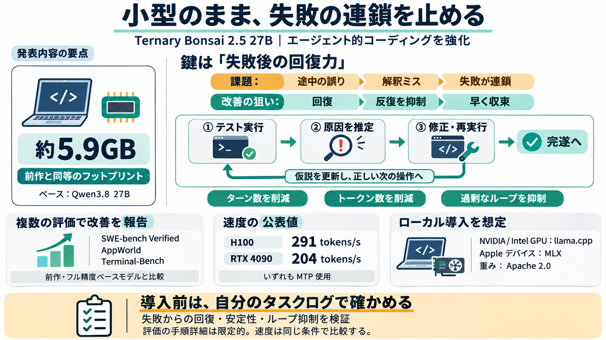

PrismML — Introducing Bonsai 2 27B: Near-Lossless Compression in a 9x Smaller Footprint
a stronger base model, Qwen3.8 27B higher aggregate capability retention of 98.2% against the full-precision model imp…

a stronger base model, Qwen3.8 27B higher aggregate capability retention of 98.2% against the full-precision model imp…
Both land near three-quarters of the full-precision score. Against that, AIME26 comes in at 95.83, LiveCodeBench at 90.0…
Today PrismML is bringing the maximal possible intelligence that can run locally on an iPhone. 1-bit Bonsai 27B compress…
| BigCodeBench | 58.1% | Best verified: Ternary Bonsai 2 27B · 58.1% | GapHighest listed | Reported by Prism ML | Shown …
On the CUDA serving path the drafter is a measured net win — an accepted length of τ ≈ 3.7 at draft depth k = 4 turns in…